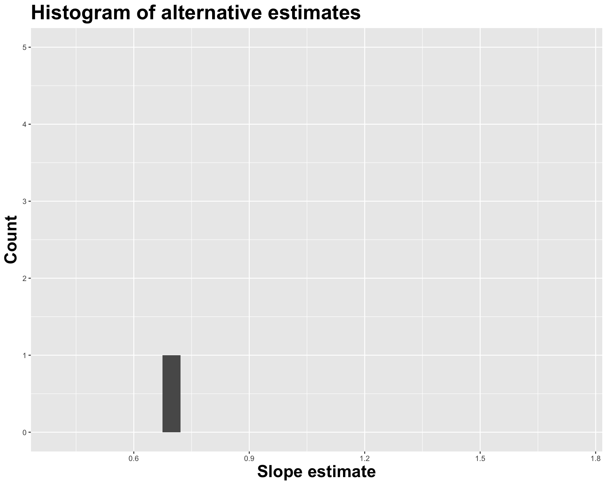
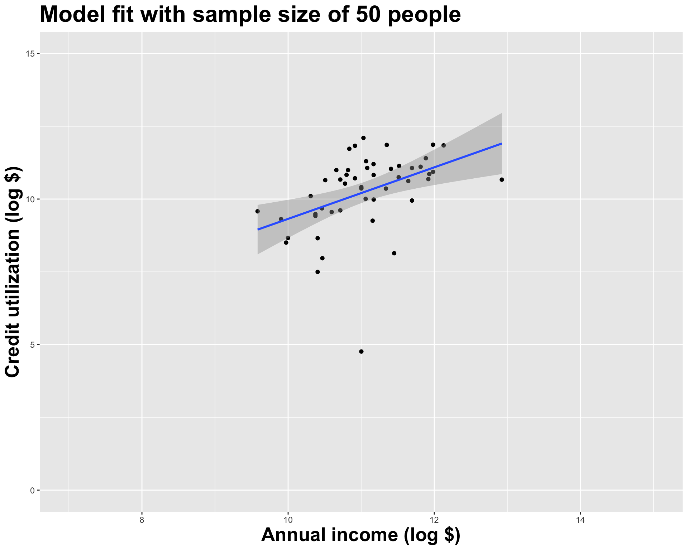

# A tibble: 2 × 2
term estimate
<chr> <dbl>
1 (Intercept) 2.94
2 log_inc 0.657Lecture 21
June 16, 2025
# A tibble: 2 × 2
term estimate
<chr> <dbl>
1 (Intercept) 2.94
2 log_inc 0.657

# A tibble: 2 × 2
term estimate
<chr> <dbl>
1 (Intercept) 5.29
2 log_inc 0.486

# A tibble: 2 × 2
term estimate
<chr> <dbl>
1 (Intercept) 1.62
2 log_inc 0.805


openintro::duke_forest

Goal: Use the area (in square feet) to understand variability in the price of houses in Duke Forest.
Fill in the blank: For each additional square foot, the model predicts the sale price of Duke Forest houses to be higher, on average, by between ___ and ___ dollars.


\(H_0\) person well vs \(H_A\) person sick.

Pick a threshold \(\alpha\in[0,\,1]\) called the discernibility level and threshold the \(p\)-value: